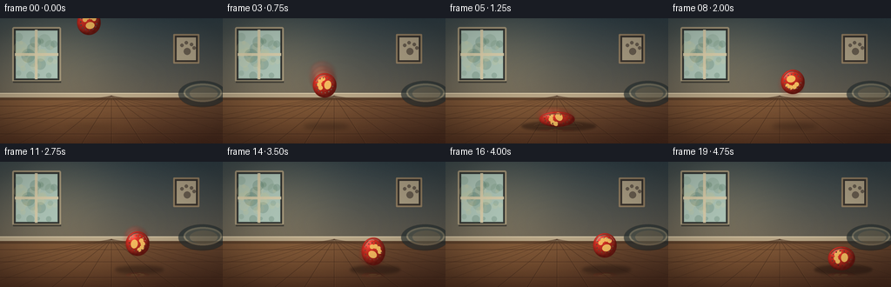
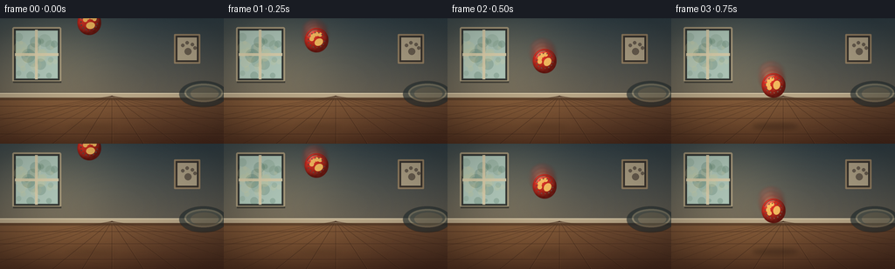

CODING AGENTS AS PIXEL WORLD MODELS
traex/GPT-5.6-Sol · mechanics_0038
点击播放 · 原生 RGB 像素
逐轮保存的候选
回放视频、检查图与代码变化。
每份候选均可单独播放。实际图片检查记录在下方工具轨迹中。
候选 01播放与检查图
点击播放 · 原生 RGB 像素

展开代码变化
--- 上一保存版本
+++ 本次保存版本
@@ -0,0 +1,258 @@
+from pathlib import Path
+import math
+import numpy as np
+from PIL import Image, ImageDraw, ImageFilter
+import artifact_io
+
+# Deterministic procedural renderer: a low-angle living-room shot of a rubber dog ball bounce.
+ROOT = Path(__file__).resolve().parent
+W, H, N = 256, 144, 20
+SS = 4
+SW, SH = W * SS, H * SS
+rng = np.random.default_rng(38)
+
+def sc(v):
+ return int(round(v * SS))
+
+def lerp(a, b, t):
+ return a + (b - a) * t
+
+def make_background():
+ # Painterly but photographic wall/floor gradients with very light sensor grain.
+ yy, xx = np.mgrid[0:SH, 0:SW]
+ y = yy / SS
+ x = xx / SS
+ arr = np.zeros((SH, SW, 3), dtype=np.float32)
+ wall = y < 91
+ wt = np.clip(y / 91, 0, 1)
+ top = np.array([48, 63, 70], np.float32)
+ bottom = np.array([97, 91, 79], np.float32)
+ arr[:] = top
+ for c in range(3):
+ arr[..., c] = np.where(wall, top[c] * (1-wt) + bottom[c] * wt, arr[..., c])
+ # Warm daylight from the window, broad and unobtrusive.
+ glow = np.exp(-((x-58)**2/(2*58**2) + (y-47)**2/(2*54**2))) * wall
+ arr += glow[..., None] * np.array([35, 29, 18])
+
+ floor_t = np.clip((y - 91) / 53, 0, 1)
+ ftop = np.array([104, 71, 48], np.float32)
+ fbot = np.array([68, 39, 27], np.float32)
+ floor = ~wall
+ floor_col = ftop[None,None,:] * (1-floor_t[...,None]) + fbot[None,None,:] * floor_t[...,None]
+ # subtle light pool on the floor
+ pool = np.exp(-((x-77)**2/(2*75**2) + (y-111)**2/(2*33**2)))
+ floor_col += pool[...,None] * np.array([34,25,12])
+ arr = np.where(floor[...,None], floor_col, arr)
+ grain = rng.normal(0, 1.2, (SH, SW, 1))
+ arr += grain
+ base = Image.fromarray(np.uint8(np.clip(arr,0,255)), 'RGB')
+ d = ImageDraw.Draw(base, 'RGBA')
+
+ # Window and soft outside foliage, left side, kept out of the ball's trajectory.
+ d.rounded_rectangle((sc(14),sc(10),sc(70),sc(73)), radius=sc(2), fill=(48,51,49,235), outline=(184,168,134,220), width=sc(2))
+ d.rectangle((sc(18),sc(14),sc(66),sc(69)), fill=(166,191,177,255))
+ d.rectangle((sc(19),sc(15),sc(65),sc(68)), fill=(177,201,187,255))
+ # distant leafy bokeh
+ for _ in range(35):
+ cx = rng.uniform(20,65); cy=rng.uniform(21,67); rr=rng.uniform(2,8)
+ col = rng.choice([(90,127,97,40),(48,92,70,48),(214,211,151,45),(240,222,166,38)])
+ d.ellipse((sc(cx-rr),sc(cy-rr),sc(cx+rr),sc(cy+rr)), fill=tuple(col))
+ d.rectangle((sc(40),sc(13),sc(43),sc(70)), fill=(224,209,172,220))
+ d.rectangle((sc(17),sc(40),sc(67),sc(43)), fill=(224,209,172,220))
+ d.line((sc(15),sc(73),sc(70),sc(73)), fill=(26,28,27,150), width=sc(2))
+
+ # Minimal framed paw artwork reinforces the pet setting.
+ d.rounded_rectangle((sc(199),sc(18),sc(229),sc(52)), radius=sc(1), fill=(50,39,31,170), outline=(159,137,105,210), width=sc(2))
+ d.rectangle((sc(203),sc(22),sc(225),sc(48)), fill=(190,176,146,215))
+ d.ellipse((sc(211),sc(34),sc(219),sc(42)), fill=(75,66,57,180))
+ for cx,cy in [(209,31),(214,28),(220,30),(223,34)]:
+ d.ellipse((sc(cx-2),sc(cy-2),sc(cx+2),sc(cy+2)), fill=(75,66,57,180))
+
+ # Baseboard and its shaded underside establish the floor plane.
+ d.rectangle((0,sc(86),SW,sc(91)), fill=(192,173,140,230))
+ d.line((0,sc(86),SW,sc(86)), fill=(227,212,179,205), width=sc(1))
+ d.rectangle((0,sc(91),SW,sc(94)), fill=(42,31,24,90))
+
+ # A plush dog bed in the distant right corner.
+ bed = Image.new('RGBA',(SW,SH),(0,0,0,0)); bd=ImageDraw.Draw(bed,'RGBA')
+ bd.ellipse((sc(205),sc(72),sc(260),sc(102)), fill=(35,45,47,170))
+ bd.ellipse((sc(211),sc(75),sc(255),sc(96)), fill=(74,79,72,220), outline=(122,119,99,160), width=sc(2))
+ bd.ellipse((sc(218),sc(79),sc(250),sc(94)), fill=(96,92,76,180))
+ bed=bed.filter(ImageFilter.GaussianBlur(sc(.35)))
+ base=Image.alpha_composite(base.convert('RGBA'),bed).convert('RGB')
+ d=ImageDraw.Draw(base,'RGBA')
+
+ # Perspective hardwood seams and organic grain.
+ vanish=(128,89)
+ for xb in [-190,-125,-68,-20,22,60,94,128,164,202,246,300,370,450]:
+ d.line((sc(vanish[0]),sc(vanish[1]),sc(xb),SH), fill=(41,24,17,95), width=sc(.7))
+ d.line((sc(vanish[0]+.3),sc(vanish[1]),sc(xb+.7),SH), fill=(205,138,81,30), width=sc(.45))
+ for sy in [101,115,133]:
+ d.line((0,sc(sy),SW,sc(sy)), fill=(47,27,20,105), width=sc(.7))
+ d.line((0,sc(sy+0.6),SW,sc(sy+0.6)), fill=(204,138,82,28), width=sc(.5))
+ for _ in range(58):
+ y0=rng.uniform(96,143); x0=rng.uniform(0,256); ln=rng.uniform(4,24)*(0.4+(y0-91)/53)
+ bend=rng.uniform(-1.0,1.0)
+ col=(48,27,20,int(rng.uniform(12,34))) if rng.random()<.7 else (228,151,86,int(rng.uniform(8,22)))
+ d.arc((sc(x0),sc(y0-1+bend),sc(x0+ln),sc(y0+1+bend)),0,180,fill=col,width=max(1,sc(.3)))
+ # Soft vignette.
+ return base
+
+BACKGROUND = make_background()
+
+# Ball centers; impacts at frames 5, 13, and 18. A slight rightward component communicates a throw.
+xs = [102,106,111,117,123,128,133,138,143,148,153,158,163,168,173,178,183,188,193,199]
+ys = [5,25,49,77,104,116,98,83,73,72,80,94,109,116,103,95,96,105,116,111]
+# Elliptical deformation: width/height radii in pixels.
+shapes = [(14.0,14.5)]*20
+shapes[4]=(15.0,16.0)
+shapes[5]=(21.0,9.0)
+shapes[6]=(13.5,17.0)
+shapes[12]=(15.2,15.2)
+shapes[13]=(19.0,10.5)
+shapes[14]=(14.0,16.5)
+shapes[18]=(17.5,11.0)
+shapes[19]=(16.0,14.0)
+impact_strength = {5:1.0,13:.62,18:.32}
+
+def add_shadow(img, cx, cy, rx, ry, frame_idx):
+ # Shadow falls beneath ball on the floor; it sharpens and spreads at each contact.
+ layer=Image.new('RGBA',(SW,SH),(0,0,0,0)); ld=ImageDraw.Draw(layer,'RGBA')
+ bottom=cy+ry
+ clearance=max(0, 125-bottom)
+ closeness=np.clip(1-clearance/68,0.08,1)
+ sx=rx*(1.15+0.8*closeness)+clearance*.08
+ sy=2.0+3.4*closeness
+ alpha=int(32+78*closeness)
+ ld.ellipse((sc(cx-sx),sc(124-sy),sc(cx+sx+4),sc(124+sy)),fill=(24,13,10,alpha))
+ layer=layer.filter(ImageFilter.GaussianBlur(sc(1.2+2.4*(1-closeness))))
+ return Image.alpha_composite(img.convert('RGBA'),layer)
+
+def ball_patch(rx, ry, spin_deg, opacity=255, blur=0.0):
+ # Supersampled shaded ellipsoid patch with matte rubber texture.
+ margin=4
+ pw=sc(rx*2+margin*2); ph=sc(ry*2+margin*2)
+ yy,xx=np.mgrid[0:ph,0:pw]
+ cx=pw/2; cy=ph/2
+ nx=(xx-cx)/(rx*SS); ny=(yy-cy)/(ry*SS)
+ q=nx*nx+ny*ny
+ inside=q<=1
+ nz=np.sqrt(np.clip(1-q,0,1))
+ # Upper-left softbox, diffuse red rubber, and mild cool rim.
+ L=np.array([-.42,-.55,.72]); lam=np.clip(nx*L[0]+ny*L[1]+nz*L[2],0,1)
+ edge=np.clip(nz,0,1)
+ base=np.array([205,43,34.],np.float32)
+ rgb=base[None,None,:]*(0.40+0.58*lam[...,None])
+ rgb += np.array([31,11,5])[None,None,:]*(edge[...,None])
+ spec=(np.clip(lam,0,1)**18)*52
+ rgb+=spec[...,None]
+ # deterministic micro texture avoids a plastic-vector look
+ texture=(np.sin(xx*.31+yy*.17)+np.sin(xx*.11-yy*.27))*1.7
+ rgb+=texture[...,None]
+ alpha=np.clip((1-q)*SS*2.5,0,1)*opacity
+ arr=np.zeros((ph,pw,4),dtype=np.uint8)
+ arr[...,:3]=np.uint8(np.clip(rgb,0,255)); arr[...,3]=np.uint8(alpha)
+ patch=Image.fromarray(arr,'RGBA')
+
+ # Paw-print emblem and curved seam, clipped by the ball alpha.
+ marks=Image.new('RGBA',(pw,ph),(0,0,0,0)); md=ImageDraw.Draw(marks,'RGBA')
+ # Design in an intermediate square and rotate to imply ball spin.
+ design=Image.new('RGBA',(pw,ph),(0,0,0,0)); dd=ImageDraw.Draw(design,'RGBA')
+ mx,my=cx+sc(1),cy+sc(1)
+ cream=(250,204,102,225)
+ dd.ellipse((mx-sc(5.1),my-sc(1.5),mx+sc(5.1),my+sc(6.2)),fill=cream)
+ for ox,oy,r in [(-5,-5,2.5),(-1.7,-7.3,2.5),(2.4,-7.0,2.5),(5.7,-4.4,2.35)]:
+ dd.ellipse((mx+sc(ox-r),my+sc(oy-r),mx+sc(ox+r),my+sc(oy+r)),fill=cream)
+ design=design.rotate(spin_deg,resample=Image.Resampling.BICUBIC,center=(cx,cy))
+ # Clip motif to ellipsoid.
+ da=np.asarray(design.getchannel('A'),dtype=np.uint16)
+ pa=np.asarray(patch.getchannel('A'),dtype=np.uint16)
+ design.putalpha(Image.fromarray(np.uint8(da*pa//255),'L'))
+ patch=Image.alpha_composite(patch,design)
+ md=ImageDraw.Draw(patch,'RGBA')
+ # Curving molded seam and specular crescent.
+ md.arc((sc(margin+2),sc(margin+2),pw-sc(margin+2),ph-sc(margin+2)),206,337,fill=(106,20,18,120),width=max(1,sc(.65)))
+ md.arc((sc(margin+4),sc(margin+3),pw-sc(margin+7),ph-sc(margin+7)),194,288,fill=(255,173,143,92),width=max(1,sc(.8)))
+ # Tiny molded dimples/nubs.
+ for a in np.linspace(0.15,5.9,14):
+ rr=.71+0.11*math.sin(a*3)
+ px=cx+math.cos(a)*rx*SS*.68; py=cy+math.sin(a)*ry*SS*.60
+ md.ellipse((px-sc(rr),py-sc(rr),px+sc(rr),py+sc(rr)),fill=(102,19,17,52))
+ md.ellipse((px-sc(rr*.65),py-sc(rr*.75),px+sc(rr*.1),py-sc(rr*.15)),fill=(255,151,119,62))
+ if blur:
+ patch=patch.filter(ImageFilter.GaussianBlur(sc(blur)))
+ return patch
+
+def paste_center(img, patch, x, y):
+ pos=(int(round(sc(x)-patch.width/2)),int(round(sc(y)-patch.height/2)))
+ img.alpha_composite(patch,pos)
+
+def add_motion_blur(img, i):
+ if i==0: return img
+ dx=xs[i]-xs[i-1]; dy=ys[i]-ys[i-1]
+ speed=math.hypot(dx,dy)
+ if speed<8: return img
+ # Ghosts behind current motion are transparent, soft, and subordinate to sharp ball.
+ count=3 if speed>18 else 2
+ for k in range(count,0,-1):
+ frac=k/(count+1)*.58
+ gx=xs[i]-dx*frac; gy=ys[i]-dy*frac
+ rx,ry=shapes[i]
+ ghost=ball_patch(rx*(1+.06*k),ry*(1+.04*k),i*24,opacity=int(18+10*(count-k)),blur=.75+.25*k)
+ paste_center(img,ghost,gx,gy)
+ return img
+
+def render_frame(i):
+ img=BACKGROUND.convert('RGBA')
+ rx,ry=shapes[i]; cx,cy=xs[i],ys[i]
+ img=add_shadow(img,cx,cy,rx,ry,i)
+
+ # Subtle impact rings and tiny floor motes appear only at the three compression frames.
+ if i in impact_strength:
+ strength=impact_strength[i]
+ fx=Image.new('RGBA',(SW,SH),(0,0,0,0)); fd=ImageDraw.Draw(fx,'RGBA')
+ fd.arc((sc(cx-27*strength),sc(119),sc(cx+30*strength),sc(129)),190,350,
+ fill=(239,181,111,int(64*strength)),width=max(1,sc(.65)))
+ fd.line((sc(cx-rx-2),sc(124),sc(cx+rx+3),sc(124)),fill=(245,192,117,int(50*strength)),width=max(1,sc(.45)))
+ for j in range(max(1,int(4*strength))):
+ px=cx+(j-(2*strength))*8; py=121-(j%2)*2
+ fd.ellipse((sc(px-.6),sc(py-.6),sc(px+.6),sc(py+.6)),fill=(234,181,116,int(80*strength)))
+ fx=fx.filter(ImageFilter.GaussianBlur(sc(.35)))
+ img=Image.alpha_composite(img,fx)
+
+ img=add_motion_blur(img,i)
+ ball=ball_patch(rx,ry,(i*23+8)%360,255,0)
+ paste_center(img,ball,cx,cy)
+
+ # A faint warm reflection is visible only close to the polished boards.
+ clearance=max(0,124-(cy+ry))
+ if clearance<18:
+ refl=ball.resize((ball.width,max(2,int(ball.height*.23))),Image.Resampling.BICUBIC).transpose(Image.Transpose.FLIP_TOP_BOTTOM)
+ alpha=np.asarray(refl.getchannel('A'),dtype=np.float32)
+ fade=np.linspace(.17,0,refl.height)[:,None]
+ refl.putalpha(Image.fromarray(np.uint8(alpha*fade),'L'))
+ paste_center(img,refl,cx,126+refl.height/(2*SS))
+
+ # Mild optical vignette/toning applied consistently.
+ rgb=np.asarray(img.convert('RGB'),dtype=np.float32)
+ yy,xx=np.mgrid[0:SH,0:SW]
+ nx=(xx-SW/2)/(SW/2); ny=(yy-SH/2)/(SH/2)
+ vig=np.clip(1-0.14*(nx*nx+ny*ny),.78,1)[...,None]
+ rgb=np.clip(rgb*vig,0,255).astype(np.uint8)
+ out=Image.fromarray(rgb,'RGB').resize((W,H),Image.Resampling.LANCZOS)
+ return np.asarray(out,dtype=np.uint8)
+
+def main():
+ frames=np.stack([render_frame(i) for i in range(N)],axis=0)
+ artifact_io.save(frames,ROOT)
+ # A conventional MP4 preview is useful outside the supplied HTML player.
+ try:
+ import imageio.v2 as imageio
+ imageio.mimwrite(ROOT/'preview.mp4',frames,fps=4,codec='libx264',quality=8,
+ macro_block_size=None,ffmpeg_log_level='error')
+ except Exception as exc:
+ print('MP4 preview skipped:',exc)
+ print('saved',frames.shape,frames.dtype)
+
+if __name__=='__main__':
+ main()
可观测工具轨迹
实际执行的命令与返回图片。
命令 1exit 0
/bin/bash -lc "cat prompt.txt && printf '\\n--- GENERATION_RULES ---\\n' && cat GENERATION_RULES.md && printf '\\n--- TASK_SPEC ---\\n' && cat task_spec.json"
命令 2exit 0
/bin/bash -lc "find . -maxdepth 2 -type f -printf '%p\\n' | sort && printf '\\nTOOLS\\n' && command -v ffmpeg || true && command -v python3 || true && python3 - <<'PY' mods=['PIL','numpy','cv2','imageio','moviepy'] for m in mods: try: x=__import__(m); print(m,'OK',getattr(x,'__version__','')) except Exception as e: print(m,'NO',e) PY"
命令 3exit 0
/bin/bash -lc "sed -n '1,260p' artifact_io.py"
命令 4exit 0
/bin/bash -lc "cat > generate.py <<'PY'
from pathlib import Path
import math
import numpy as np
from PIL import Image, ImageDraw, ImageFilter
import artifact_io
# Deterministic procedural renderer: a low-angle living-room shot of a rubber dog ball bounce.
ROOT = Path(__file__).resolve().parent
W, H, N = 256, 144, 20
SS = 4
SW, SH = W * SS, H * SS
rng = np.random.default_rng(38)
def sc(v):
return int(round(v * SS))
def lerp(a, b, t):
return a + (b - a) * t
def make_background():
# Painterly but photographic wall/floor gradients with very light sensor grain.
yy, xx = np.mgrid[0:SH, 0:SW]
y = yy / SS
x = xx / SS
arr = np.zeros((SH, SW, 3), dtype=np.float32)
wall = y < 91
wt = np.clip(y / 91, 0, 1)
top = np.array([48, 63, 70], np.float32)
bottom = np.array([97, 91, 79], np.float32)
arr[:] = top
for c in range(3):
arr[..., c] = np.where(wall, top[c] * (1-wt) + bottom[c] * wt, arr[..., c])
# Warm daylight from the window, broad and unobtrusive.
glow = np.exp(-((x-58)**2/(2*58**2) + (y-47)**2/(2*54**2))) * wall
arr += glow[..., None] * np.array([35, 29, 18])
floor_t = np.clip((y - 91) / 53, 0, 1)
ftop = np.array([104, 71, 48], np.float32)
fbot = np.array([68, 39, 27], np.float32)
floor = ~wall
floor_col = ftop[None,None,:] * (1-floor_t[...,None]) + fbot[None,None,:] * floor_t[...,None]
# subtle light pool on the floor
pool = np.exp(-((x-77)**2/(2*75**2) + (y-111)**2/(2*33**2)))
floor_col += pool[...,None] * np.array([34,25,12])
arr = np.where(floor[...,None], floor_col, arr)
grain = rng.normal(0, 1.2, (SH, SW, 1))
arr += grain
base = Image.fromarray(np.uint8(np.clip(arr,0,255)), 'RGB')
d = ImageDraw.Draw(base, 'RGBA')
# Window and soft outside foliage, left side, kept out of the ball's trajectory.
d.rounded_rectangle((sc(14),sc(10),sc(70),sc(73)), radius=sc(2), fill=(48,51,49,235), outline=(184,168,134,220), width=sc(2))
d.rectangle((sc(18),sc(14),sc(66),sc(69)), fill=(166,191,177,255))
d.rectangle((sc(19),sc(15),sc(65),sc(68)), fill=(177,201,187,255))
# distant leafy bokeh
for _ in range(35):
cx = rng.uniform(20,65); cy=rng.uniform(21,67); rr=rng.uniform(2,8)
col = rng.choice([(90,127,97,40),(48,92,70,48),(214,211,151,45),(240,222,166,38)])
d.ellipse((sc(cx-rr),sc(cy-rr),sc(cx+rr),sc(cy+rr)), fill=tuple(col))
d.rectangle((sc(40),sc(13),sc(43),sc(70)), fill=(224,209,172,220))
d.rectangle((sc(17),sc(40),sc(67),sc(43)), fill=(224,209,172,220))
d.line((sc(15),sc(73),sc(70),sc(73)), fill=(26,28,27,150), width=sc(2))
# Minimal framed paw artwork reinforces the pet setting.
d.rounded_rectangle((sc(199),sc(18),sc(229),sc(52)), radius=sc(1), fill=(50,39,31,170), outline=(159,137,105,210), width=sc(2))
d.rectangle((sc(203),sc(22),sc(225),sc(48)), fill=(190,176,146,215))
d.ellipse((sc(211),sc(34),sc(219),sc(42)), fill=(75,66,57,180))
for cx,cy in [(209,31),(214,28),(220,30),(223,34)]:
d.ellipse((sc(cx-2),sc(cy-2),sc(cx+2),sc(cy+2)), fill=(75,66,57,180))
# Baseboard and its shaded underside establish the floor plane.
d.rectangle((0,sc(86),SW,sc(91)), fill=(192,173,140,230))
d.line((0,sc(86),SW,sc(86)), fill=(227,212,179,205), width=sc(1))
d.rectangle((0,sc(91),SW,sc(94)), fill=(42,31,24,90))
# A plush dog bed in the distant right corner.
bed = Image.new('RGBA',(SW,SH),(0,0,0,0)); bd=ImageDraw.Draw(bed,'RGBA')
bd.ellipse((sc(205),sc(72),sc(260),sc(102)), fill=(35,45,47,170))
bd.ellipse((sc(211),sc(75),sc(255),sc(96)), fill=(74,79,72,220), outline=(122,119,99,160), width=sc(2))
bd.ellipse((sc(218),sc(79),sc(250),sc(94)), fill=(96,92,76,180))
bed=bed.filter(ImageFilter.GaussianBlur(sc(.35)))
base=Image.alpha_composite(base.convert('RGBA'),bed).convert('RGB')
d=ImageDraw.Draw(base,'RGBA')
# Perspective hardwood seams and organic grain.
vanish=(128,89)
for xb in [-190,-125,-68,-20,22,60,94,128,164,202,246,300,370,450]:
d.line((sc(vanish[0]),sc(vanish[1]),sc(xb),SH), fill=(41,24,17,95), width=sc(.7))
d.line((sc(vanish[0]+.3),sc(vanish[1]),sc(xb+.7),SH), fill=(205,138,81,30), width=sc(.45))
for sy in [101,115,133]:
d.line((0,sc(sy),SW,sc(sy)), fill=(47,27,20,105), width=sc(.7))
d.line((0,sc(sy+0.6),SW,sc(sy+0.6)), fill=(204,138,82,28), width=sc(.5))
for _ in range(58):
y0=rng.uniform(96,143); x0=rng.uniform(0,256); ln=rng.uniform(4,24)*(0.4+(y0-91)/53)
bend=rng.uniform(-1.0,1.0)
col=(48,27,20,int(rng.uniform(12,34))) if rng.random()<.7 else (228,151,86,int(rng.uniform(8,22)))
d.arc((sc(x0),sc(y0-1+bend),sc(x0+ln),sc(y0+1+bend)),0,180,fill=col,width=max(1,sc(.3)))
# Soft vignette.
return base
BACKGROUND = make_background()
# Ball centers; impacts at frames 5, 13, and 18. A slight rightward component communicates a throw.
xs = [102,106,111,117,123,128,133,138,143,148,153,158,163,168,173,178,183,188,193,199]
ys = [5,25,49,77,104,116,98,83,73,72,80,94,109,116,103,95,96,105,116,111]
# Elliptical deformation: width/height radii in pixels.
shapes = [(14.0,14.5)]*20
shapes[4]=(15.0,16.0)
shapes[5]=(21.0,9.0)
shapes[6]=(13.5,17.0)
shapes[12]=(15.2,15.2)
shapes[13]=(19.0,10.5)
shapes[14]=(14.0,16.5)
shapes[18]=(17.5,11.0)
shapes[19]=(16.0,14.0)
impact_strength = {5:1.0,13:.62,18:.32}
def add_shadow(img, cx, cy, rx, ry, frame_idx):
# Shadow falls beneath ball on the floor; it sharpens and spreads at each contact.
layer=Image.new('RGBA',(SW,SH),(0,0,0,0)); ld=ImageDraw.Draw(layer,'RGBA')
bottom=cy+ry
clearance=max(0, 125-bottom)
closeness=np.clip(1-clearance/68,0.08,1)
sx=rx*(1.15+0.8*closeness)+clearance*.08
sy=2.0+3.4*closeness
alpha=int(32+78*closeness)
ld.ellipse((sc(cx-sx),sc(124-sy),sc(cx+sx+4),sc(124+sy)),fill=(24,13,10,alpha))
layer=layer.filter(ImageFilter.GaussianBlur(sc(1.2+2.4*(1-closeness))))
return Image.alpha_composite(img.convert('RGBA'),layer)
def ball_patch(rx, ry, spin_deg, opacity=255, blur=0.0):
# Supersampled shaded ellipsoid patch with matte rubber texture.
margin=4
pw=sc(rx*2+margin*2); ph=sc(ry*2+margin*2)
yy,xx=np.mgrid[0:ph,0:pw]
cx=pw/2; cy=ph/2
nx=(xx-cx)/(rx*SS); ny=(yy-cy)/(ry*SS)
q=nx*nx+ny*ny
inside=q<=1
nz=np.sqrt(np.clip(1-q,0,1))
# Upper-left softbox, diffuse red rubber, and mild cool rim.
L=np.array([-.42,-.55,.72]); lam=np.clip(nx*L[0]+ny*L[1]+nz*L[2],0,1)
edge=np.clip(nz,0,1)
base=np.array([205,43,34.],np.float32)
rgb=base[None,None,:]*(0.40+0.58*lam[...,None])
rgb += np.array([31,11,5])[None,None,:]*(edge[...,None])
spec=(np.clip(lam,0,1)**18)*52
rgb+=spec[...,None]
# deterministic micro texture avoids a plastic-vector look
texture=(np.sin(xx*.31+yy*.17)+np.sin(xx*.11-yy*.27))*1.7
rgb+=texture[...,None]
alpha=np.clip((1-q)*SS*2.5,0,1)*opacity
arr=np.zeros((ph,pw,4),dtype=np.uint8)
arr[...,:3]=np.uint8(np.clip(rgb,0,255)); arr[...,3]=np.uint8(alpha)
patch=Image.fromarray(arr,'RGBA')
# Paw-print emblem and curved seam, clipped by the ball alpha.
marks=Image.new('RGBA',(pw,ph),(0,0,0,0)); md=ImageDraw.Draw(marks,'RGBA')
# Design in an intermediate square and rotate to imply ball spin.
design=Image.new('RGBA',(pw,ph),(0,0,0,0)); dd=ImageDraw.Draw(design,'RGBA')
mx,my=cx+sc(1),cy+sc(1)
cream=(250,204,102,225)
dd.ellipse((mx-sc(5.1),my-sc(1.5),mx+sc(5.1),my+sc(6.2)),fill=cream)
for ox,oy,r in [(-5,-5,2.5),(-1.7,-7.3,2.5),(2.4,-7.0,2.5),(5.7,-4.4,2.35)]:
dd.ellipse((mx+sc(ox-r),my+sc(oy-r),mx+sc(ox+r),my+sc(oy+r)),fill=cream)
design=design.rotate(spin_deg,resample=Image.Resampling.BICUBIC,center=(cx,cy))
# Clip motif to ellipsoid.
da=np.asarray(design.getchannel('A'),dtype=np.uint16)
pa=np.asarray(patch.getchannel('A'),dtype=np.uint16)
design.putalpha(Image.fromarray(np.uint8(da*pa//255),'L'))
patch=Image.alpha_composite(patch,design)
md=ImageDraw.Draw(patch,'RGBA')
# Curving molded seam and specular crescent.
md.arc((sc(margin+2),sc(margin+2),pw-sc(margin+2),ph-sc(margin+2)),206,337,fill=(106,20,18,120),width=max(1,sc(.65)))
md.arc((sc(margin+4),sc(margin+3),pw-sc(margin+7),ph-sc(margin+7)),194,288,fill=(255,173,143,92),width=max(1,sc(.8)))
# Tiny molded dimples/nubs.
for a in np.linspace(0.15,5.9,14):
rr=.71+0.11*math.sin(a*3)
px=cx+math.cos(a)*rx*SS*.68; py=cy+math.sin(a)*ry*SS*.60
md.ellipse((px-sc(rr),py-sc(rr),px+sc(rr),py+sc(rr)),fill=(102,19,17,52))
md.ellipse((px-sc(rr*.65),py-sc(rr*.75),px+sc(rr*.1),py-sc(rr*.15)),fill=(255,151,119,62))
if blur:
patch=patch.filter(ImageFilter.GaussianBlur(sc(blur)))
return patch
def paste_center(img, patch, x, y):
pos=(int(round(sc(x)-patch.width/2)),int(round(sc(y)-patch.height/2)))
img.alpha_composite(patch,pos)
def add_motion_blur(img, i):
if i==0: return img
dx=xs[i]-xs[i-1]; dy=ys[i]-ys[i-1]
speed=math.hypot(dx,dy)
if speed<8: return img
# Ghosts behind current motion are transparent, soft, and subordinate to sharp ball.
count=3 if speed>18 else 2
for k in range(count,0,-1):
frac=k/(count+1)*.58
gx=xs[i]-dx*frac; gy=ys[i]-dy*frac
rx,ry=shapes[i]
ghost=ball_patch(rx*(1+.06*k),ry*(1+.04*k),i*24,opacity=int(18+10*(count-k)),blur=.75+.25*k)
paste_center(img,ghost,gx,gy)
return img
def render_frame(i):
img=BACKGROUND.convert('RGBA')
rx,ry=shapes[i]; cx,cy=xs[i],ys[i]
img=add_shadow(img,cx,cy,rx,ry,i)
# Subtle impact rings and tiny floor motes appear only at the three compression frames.
if i in impact_strength:
strength=impact_strength[i]
fx=Image.new('RGBA',(SW,SH),(0,0,0,0)); fd=ImageDraw.Draw(fx,'RGBA')
fd.arc((sc(cx-27*strength),sc(119),sc(cx+30*strength),sc(129)),190,350,
fill=(239,181,111,int(64*strength)),width=max(1,sc(.65)))
fd.line((sc(cx-rx-2),sc(124),sc(cx+rx+3),sc(124)),fill=(245,192,117,int(50*strength)),width=max(1,sc(.45)))
for j in range(max(1,int(4*strength))):
px=cx+(j-(2*strength))*8; py=121-(j%2)*2
fd.ellipse((sc(px-.6),sc(py-.6),sc(px+.6),sc(py+.6)),fill=(234,181,116,int(80*strength)))
fx=fx.filter(ImageFilter.GaussianBlur(sc(.35)))
img=Image.alpha_composite(img,fx)
img=add_motion_blur(img,i)
ball=ball_patch(rx,ry,(i*23+8)%360,255,0)
paste_center(img,ball,cx,cy)
# A faint warm reflection is visible only close to the polished boards.
clearance=max(0,124-(cy+ry))
if clearance<18:
refl=ball.resize((ball.width,max(2,int(ball.height*.23))),Image.Resampling.BICUBIC).transpose(Image.Transpose.FLIP_TOP_BOTTOM)
alpha=np.asarray(refl.getchannel('A'),dtype=np.float32)
fade=np.linspace(.17,0,refl.height)[:,None]
refl.putalpha(Image.fromarray(np.uint8(alpha*fade),'L'))
paste_center(img,refl,cx,126+refl.height/(2*SS))
# Mild optical vignette/toning applied consistently.
rgb=np.asarray(img.convert('RGB'),dtype=np.float32)
yy,xx=np.mgrid[0:SH,0:SW]
nx=(xx-SW/2)/(SW/2); ny=(yy-SH/2)/(SH/2)
vig=np.clip(1-0.14*(nx*nx+ny*ny),.78,1)[...,None]
rgb=np.clip(rgb*vig,0,255).astype(np.uint8)
out=Image.fromarray(rgb,'RGB').resize((W,H),Image.Resampling.LANCZOS)
return np.asarray(out,dtype=np.uint8)
def main():
frames=np.stack([render_frame(i) for i in range(N)],axis=0)
artifact_io.save(frames,ROOT)
# A conventional MP4 preview is useful outside the supplied HTML player.
try:
import imageio.v2 as imageio
imageio.mimwrite(ROOT/'preview.mp4',frames,fps=4,codec='libx264',quality=8,
macro_block_size=None,ffmpeg_log_level='error')
except Exception as exc:
print('MP4 preview skipped:',exc)
print('saved',frames.shape,frames.dtype)
if __name__=='__main__':
main()
PY
python3 generate.py
ls -lh pixels.npz inspection.png transition_check.png index.html preview.mp4 frames/00.png frames/19.png"命令 5exit 0
/bin/bash -lc "python3 - <<'PY'
from pathlib import Path
import numpy as np
from PIL import Image
p=Path('.')
fs=sorted((p/'frames').glob('*.png'))
assert len(fs)==20
for f in fs:
im=Image.open(f)
assert im.mode=='RGB' and im.size==(256,144),(f,im.mode,im.size)
z=np.load('pixels.npz')['pixels']
assert z.shape==(144,256,20) and z.dtype==np.uint32,(z.shape,z.dtype)
for name in ['index.html','inspection.png','transition_check.png','pixels.npz','preview.mp4','generate.py']:
assert (p/name).stat().st_size>0,name
# Motion diagnostics: every frame changes and ball/contact action has strong temporal variation.
frames=np.stack([np.asarray(Image.open(f)) for f in fs])
mad=np.abs(np.diff(frames.astype(np.int16),axis=0)).mean(axis=(1,2,3))
print('validation OK')
print('frames:',frames.shape,frames.dtype,'temporal MAD:',round(float(mad.min()),2),'..',round(float(mad.max()),2))
print('deliverables:',', '.join(f'{x.name}={x.stat().st_size}B' for x in [p/'pixels.npz',p/'index.html',p/'preview.mp4']))
PY"视觉工具实际返回图片 1

视觉工具实际返回图片 2

保存候选 1 份；完成命令 5 次；可验证图片返回 2 张。原始 API 响应与完整日志保留在本地。